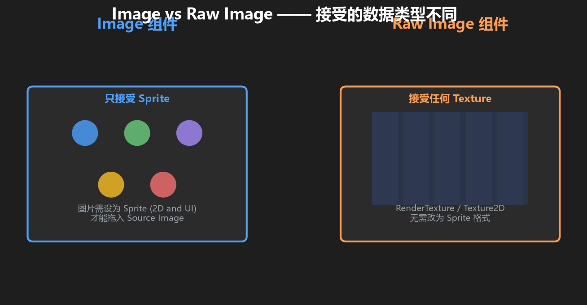
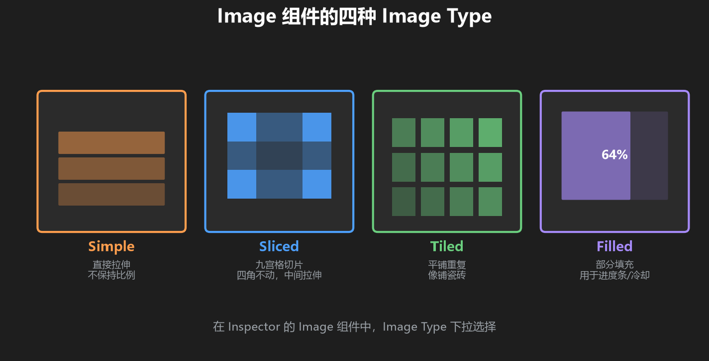
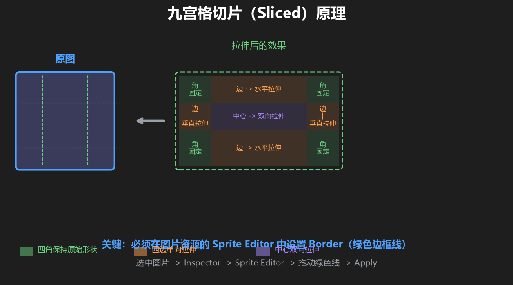
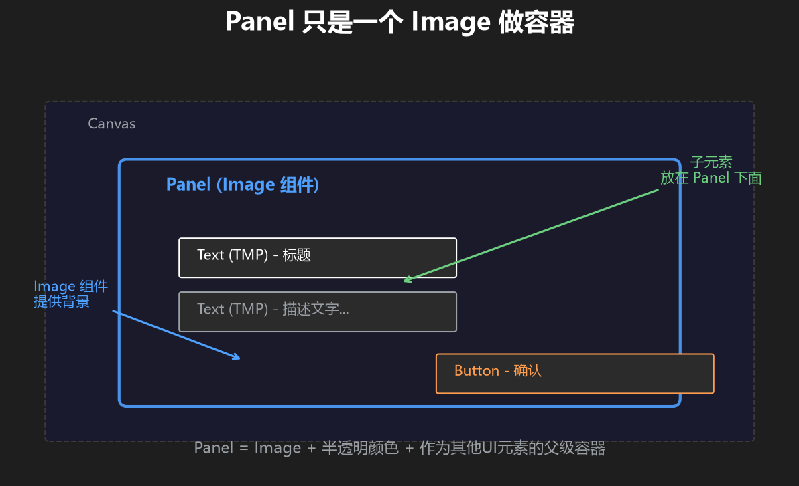
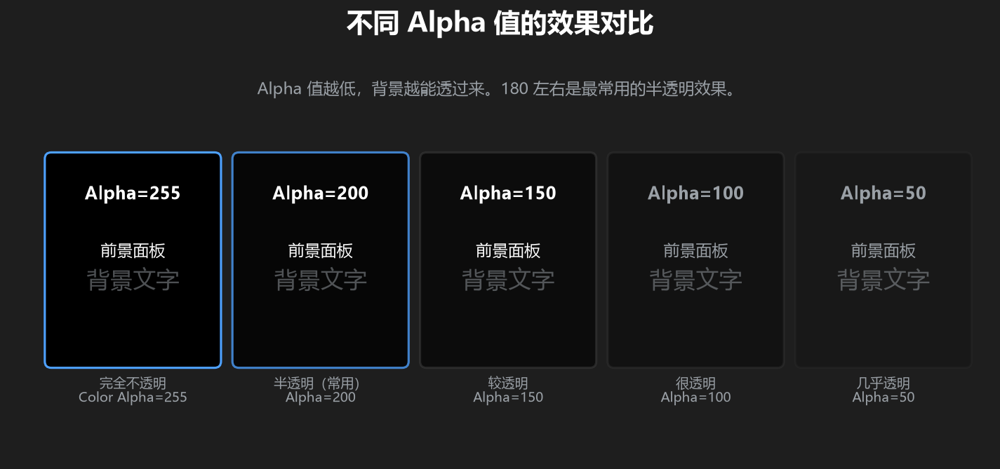

第 4 篇：Image 图片与 Panel 面板
文字和按钮都会了。这一篇学怎么显示图片，以及怎么做背景面板 — 这两个是 UI 里最常用的视觉元素。
1. Image 组件 — UI 里的"画框"
Image 组件是 Unity UI 里最基础的可视元素。不只是显示图片 — Button 的背景、Panel 的面板、进度条的填充，底层都是 Image 组件。
创建方式：右键 Canvas → UI → Image。你会得到一个白色的矩形 — 这就是一个没有指定图片的 Image（纯色填充）。

图：Image 组件（左）只能接受 Sprite，Raw Image（右）可以接受任何 Texture
2. Image Type — 图片怎么缩放？
这是 Image 组件最重要的设置。它决定了当 Image 的尺寸和原图不一样时，图片怎么处理。

图：Simple / Sliced / Tiled / Filled 四种类型的效果对比
| 类型 | 行为 | 什么时候用 |
|---|---|---|
| Simple | 直接拉伸到 Image 的尺寸，不保持比例 | 纯色块、不需要保形的背景 |
| Sliced | 九宫格切片：四角不动、四边单向拉伸、中间双向拉伸 | 最常用 圆角面板、按钮背景、对话框 |
| Tiled | 像铺瓷砖一样重复平铺原图 | 花纹背景、格子纹理 |
| Filled | 只显示图片的一部分，可以控制填充比例 | 血条、冷却图标、进度环 |

图：九宫格切片（Sliced）原理 — 四个角保持原始形状，中间区域拉伸
Sliced 需要图片本身设置了九宫格边框。选中图片资源 → Inspector 里点 Sprite Editor → 拖动绿色边框线设置 Border。没有设 Border 的图片，Sliced 效果和 Simple 一样。
3. Panel — 没有专门的"Panel 组件"
你可能在别的教程里看到「创建一个 Panel」。但在 Unity 里，Panel 就是一个普通的 Image，只是把它配置成面板的样子而已。

图：Panel 作为容器，子元素放在它里面。Panel 本身只是一个 Image。
做一个半透明背景面板的步骤：
- 右键 Canvas →
UI→Image，重命名为Panel - 把 Color 的 Alpha 调低（比如 RGBA: 0, 0, 0, 180）→ 得到半透明黑色
- 调整 RectTransform 的 Width 和 Height 到你想要的大小
- 之后你就可以把其他 UI 元素（Text、Button 等）放到 Panel 下面作为子级

图：不同 Alpha 值下的面板效果 — Alpha 越低越透明
Color 里的 Alpha 值范围是 0~255。0 是完全透明（看不见），255 是完全不透明。180 左右是常见的半透明效果。
4. Image 组件的其他重要属性
| 属性 | 作用 | 建议 |
|---|---|---|
| Source Image | 要显示的图片（拖 Sprite 资源进来） | 不填就是纯色块 |
| Color | 叠加在图片上的颜色（白色=原图，其他颜色会染色） | 做半透明面板时主要用这个 |
| Raycast Target | 是否能被鼠标/射线"命中" | 纯装饰图建议关掉，避免挡住后面的按钮 |
| Preserve Aspect | 是否保持原图比例 | 显示图标时建议勾上 |
5. 练手时间 — 做一个信息卡片
目标：做一个带半透明背景的卡片，里面有标题、描述文字和一个按钮。
创建 UI
- 右键 Canvas → UI → Image，改名
Card - Card 的 Color 设为半透明深色（RGBA: 20, 20, 40, 200），Width=350, Height=200
- Anchor 设到 middle-center（卡片在屏幕中央）
- 在 Card 下面创建 Text（标题，写"欢迎"，字号 28，白色粗体）
- 在 Card 下面再创建 Text（描述，写"这是一张信息卡片"，字号 16，灰色）
- 在 Card 下面创建 Button（文字"知道了"）
写脚本
using UnityEngine;
public class CardController : MonoBehaviour
{
public GameObject card;
public void OnCloseClicked()
{
card.SetActive(false); // 点按钮后隐藏卡片
Debug.Log("卡片已关闭");
}
}- 在 Canvas 上创建空物体
CardController，挂此脚本 - 把 Card 拖到脚本的 card 字段
- Button 的 OnClick 绑定 CardController 的 OnCloseClicked
- 运行 → 点按钮 → 卡片消失！
自检清单
- [ ] 卡片有半透明背景
- [ ] 标题、描述、按钮都在卡片里面
- [ ] 点按钮后卡片消失
- [ ] Console 有日志输出